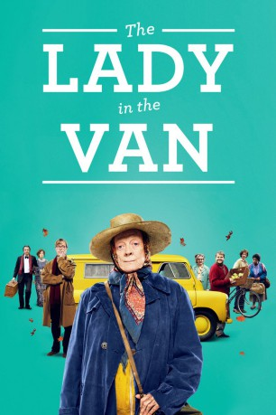

#3895 The Lady in the Van
 gesehen am 30.06.2016
gesehen am 30.06.2016
 
 IMDB-Wertung: 6.7 / 10
IMDB-Wertung: 6.7 / 10  Metascore: 0
Metascore: 0 
Dieser Film basiert auf wahren Begebenheiten. Die exzentrische, obdachlose Mary Shepard lebt in einem alten Van. Der Autor Alan Bennett lässt sie in seiner Einfahrt parken, für geplante 3 Wochen - letztendlich werden daraus 15 Jahre.
Jahr: 2015
Dauer: 103 Minuten
FSK:
Land: England Studio: Sony Pictures ReleasingTonspuren: DTS - ,
Untertitel: Deutsch,
Auflösung: 1080p (1920x1040) Größe: 5427 MB
Genre: Drama, Komödie, Biographie
Regisseur: Nicholas Hytner
Drehbuch: Arthur C. Clarke
Soundtrack:
Darsteller:
 Maggie Smith als Miss Shepherd
Maggie Smith als Miss Shepherd Jim Broadbent als Underwood
Jim Broadbent als Underwood Alex Jennings als Alan Bennett
Alex Jennings als Alan Bennett- Jamie Parker als Estate Agent
 Deborah Findlay als Pauline
Deborah Findlay als Pauline Roger Allam als Rufus
Roger Allam als Rufus Dominic Cooper als Actor
Dominic Cooper als Actor- Gwen Taylor als Mam
 Frances de la Tour als Mrs Vaughan Williams
Frances de la Tour als Mrs Vaughan Williams Claire Foy als Lois, Social Worker
Claire Foy als Lois, Social Worker James Corden als Market Trader
James Corden als Market Trader- George Taylor als Policeman
 David Calder als Leo Fairchild
David Calder als Leo Fairchild Eleanor Matsuura als Interviewer
Eleanor Matsuura als Interviewer Selina Cadell als Lady Wiggin
Selina Cadell als Lady Wiggin Dermot Crowley als Priest
Dermot Crowley als Priest Samuel Barnett als Out of Work Actor
Samuel Barnett als Out of Work Actor Russell Tovey als Young Man with Earring
Russell Tovey als Young Man with Earring- Samuel Anderson als Jehovah's Witnesses
 Sam Spruell als Another Young Man
Sam Spruell als Another Young Man Elliot Levey als Theatre Director
Elliot Levey als Theatre Director Stephen Campbell Moore als Doctor at Old Peoples Home
Stephen Campbell Moore als Doctor at Old Peoples Home Marion Bailey als Housekeeper at Convent
Marion Bailey als Housekeeper at Convent Sacha Dhawan als Doctor at Gloucester Crescent
Sacha Dhawan als Doctor at Gloucester Crescent Andrew Knott als Ambulance Man
Andrew Knott als Ambulance Man- Lorna Brown als Day Care Centre Worker
- Tony Van Silva als God
- Alan Bennett als Alan Bennett, 2014
- Jessica Bastick-Vines als Pauline and Rufus' Daughter , uncredited
 Bern Collaco als Concert Attendee , uncredited
Bern Collaco als Concert Attendee , uncredited- Tom Coulston als Smiling Pallbearer , uncredited
- Clare Hammond als Young Margaret Fairchild
- George Fenton als Conductor
- BBC Concert Orchestra als The British Symphony Orchestra
- Richard Griffiths als Sam Perry
- Pandora Colin als Fiona Perry
- Nicholas Burns als Giles Perry
- Giles Cooper als Passer by
- Tom Klenerman als Tom Perry
- Charlie Hancock als Man Shaking Van #1
- Dan Raza als Man Shaking Van #2
 Clive Merrison als Man in Confessional
Clive Merrison als Man in Confessional- Michelle Reid als Jehovah's Witness #2
- Rosalind Knight als Old Nun
- Sarah Lieberson als Stage Manager
- Cecilia Noble als Miss Briscoe, Social Worker
- Hannah Watson als Broadstairs Pianist
- Linda Broughton als Edith Fairchild
 June Watson als Woman in Day Centre
June Watson als Woman in Day Centre- Sam McArdle als Biker
Datei: X:\2015(G-M)\Lady in the Van, The (2015, FSK, 1920x1040).mkv seit 29.06.2016
Festplatte: HD 2015(A-Z)
 Es gibt insgesamt 129 Filme in der Gruppe '2015(G-M)'
Es gibt insgesamt 129 Filme in der Gruppe '2015(G-M)'